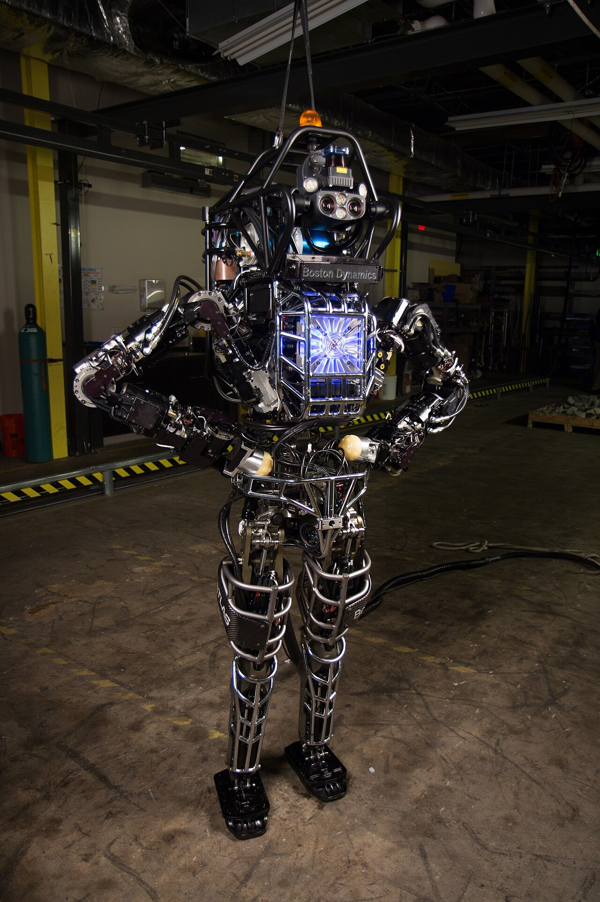
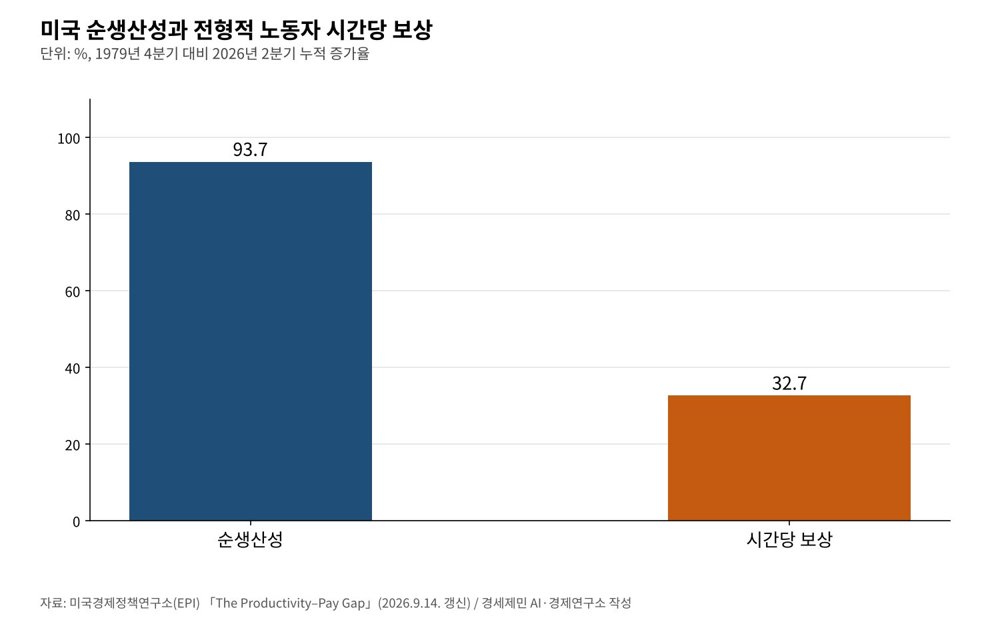
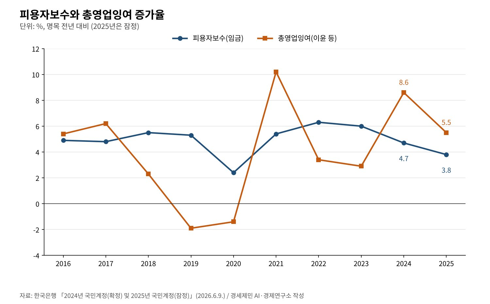

[코스피 5000의 이면②] 아틀라스는 2028년 공장에 들어온다, 로봇은 소비하지 않는다
현대차그룹, 1월 CES서 미국 공장 2028년 투입·연 3만대 로봇 생산체제 발표
9월 21일 조지아 메타플랜트에 훈련센터, 그룹 공장에 아틀라스 2만5000대 배치 계획
한국 로봇밀도 1만명당 1220대로 세계 1위, 생산성의 몫을 나누는 설계가 과제
AI경세제민=김갑봉 기자 | 현대자동차그룹이 휴머노이드 로봇 아틀라스를 2028년 미국 공장 생산라인에 넣는다. 처음 맡는 일은 부품을 조립 순서대로 고르고 늘어놓는 서열 작업이다. 2030년에는 부품 조립까지 맡긴다. 1월 5일 소비자가전전시회(CES)에서 밝혔다.
계획은 빨라지고 있다. 자회사 보스턴다이내믹스는 9월 21일 조지아주 현대차그룹 메타플랜트 아메리카에 로봇 훈련센터를 열었다. 아틀라스는 이미 실제 공장 환경에서 일을 배우고 있다.
이 연재가 처음 나온 1월, 로봇은 코스피를 끌어올린 이야기 가운데 하나였다. 지수는 6월 9114.55까지 올랐다가 10월 20일 5552.74로 내려왔다. 지수가 어디로 가든 질문은 남는다. 로봇이 만든 가치는 누구에게 가는가.

2028년 서열 작업, 2030년 조립
현대차그룹은 1월 5일 아틀라스를 2028년까지 메타플랜트 아메리카에 투입해 부품 서열 작업을 맡긴다고 했다. 2030년에는 부품 조립으로, 그 뒤에는 반복적이고 무거운 일로 넓힌다. 성능이 검증되면 공장 전체로 늘린다.
제품형 아틀라스는 관절 자유도가 56개이고 50킬로그램까지 든다. 대부분의 작업은 하루 안에 가르칠 수 있다고 회사는 설명했다. 구글 딥마인드와의 협력도 소개했다.
그룹은 2028년까지 연 3만대 로봇을 만들 수 있는 생산체제를 갖추겠다고 했다. 미국에 연 3만대 규모 로봇 공장을 새로 짓는다. 국내에는 2026년부터 5년간 125조2000억원, 미국에는 2025년부터 4년간 260억달러를 투자한다.
9월, 훈련은 이미 시작됐다
보스턴다이내믹스는 9월 21일 로봇 메타플랜트 응용센터(RMAC)의 1단계를 열었다고 발표했다. 아틀라스를 자동차 생산에 맞게 훈련하는 시험장이다. 2027년에는 지금의 약 열 배 규모 건물로 옮긴다.
회사는 앞으로 몇 년 안에 현대차와 기아의 세계 공장에 아틀라스 2만5000대를 배치하는 것부터 시작한다고 밝혔다. 연 3만대 생산 시설을 미국에 짓는다는 계획도 다시 확인했다.
현대차그룹만의 일이 아니다. 보스턴다이내믹스는 제조, 항공, 반도체, 물류, 식음료 고객과 2027년 아틀라스 데이터 수집을 넓히는 방안을 논의하고 있다고 했다. 휴머노이드가 여러 산업의 생산라인으로 들어갈 채비를 한다.
로봇 밀도 세계 1위 한국
한국은 이미 로봇이 가장 촘촘한 나라다. 국제로봇연맹(IFR)은 2026년 4월 8일 한국의 로봇 밀도가 제조업 노동자 1만명당 1220대로 세계에서 가장 높다고 밝혔다. 2024년 자료 기준이다.
IFR은 9월 공개한 세계로봇 2026 보고서에서 한국의 2025년 산업용 로봇 설치를 약 3만대로 집계했다. 1년 전보다 1% 줄었지만 세계 4위 시장이다. 휴머노이드는 이 위에 더해지는 새 층이다.
로봇 밀도가 높다는 것은 한 노동자 옆에 기계가 많다는 뜻이다. 생산성은 오른다. 문제는 그 생산성이 임금으로 얼마나 이어지느냐다. 숫자는 그 연결이 느슨하다고 말한다.
생산성은 93.7%, 보상은 32.7%
미국경제정책연구소(EPI)는 생산성과 임금의 거리를 꾸준히 잰다. 9월 14일 갱신한 자료를 보면 1979년 4분기부터 2026년 2분기까지 미국 순생산성은 93.7% 올랐다. 전형적 노동자의 시간당 보상은 32.7% 올랐다.
EPI는 생산성이 보상보다 2.9배 더 올랐다고 정리했다. 기계가 늘어 생산성이 올라도 그 몫이 임금으로 저절로 오지 않는다는 뜻이다. 자동화가 빨라질수록 분배의 규칙이 더 중요해진다.

한국 국민계정에도 비슷한 흐름이 보인다. 한국은행에 따르면 2024년 피용자보수는 4.7% 늘고 총영업잉여는 8.6% 늘었다. 2025년에는 피용자보수 3.8%, 총영업잉여 5.5%였다. 두 해 연속 기업 쪽 몫이 더 빨리 컸다.

임금의 실제 구매력도 약하다. 고용노동부 조사에서 2026년 7월 근로자 1인당 임금총액은 431만6000원으로 2.5% 올랐다. 물가를 빼면 실질임금은 360만4000원으로 0.3% 줄었다.
로봇은 소비하지 않는다
로봇은 월급을 받지 않고 밥을 사 먹지 않는다. 노동자가 받은 임금은 식당과 상점, 학원으로 돌아 다시 기업의 매출이 된다. 케인스가 말한 유효수요의 고리다. 로봇이 노동을 대신하면 이 고리의 한쪽이 가늘어진다.
한 기업에는 로봇 도입이 합리적이다. 모든 기업이 같은 선택을 하고 늘어난 이익이 임금 대신 배당과 유보로만 가면 물건을 살 사람이 준다. 개별 합리성이 전체의 수요 부족으로 이어지는 합성의 오류다.
소득 계층마다 쓰는 비율도 다르다. 국가데이터처 가계동향을 보면 2026년 2분기 처분가능소득 가운데 소비로 쓴 비율이 소득 하위 20%는 125.3%, 상위 20%는 60.3%다. 같은 돈도 누구에게 가느냐에 따라 시장으로 돌아오는 양이 다르다.
생산성의 몫을 나누는 설계
첫째는 숙련 전환이다. 현대차그룹은 아틀라스가 위험하고 반복적인 일을 먼저 맡는다고 했다. 그 자리의 노동자가 로봇 운영과 정비, 공정 설계로 옮길 수 있도록 회사와 노동자가 훈련 계획을 함께 짜야 한다.
둘째는 성과의 공유다. 3차 상법 개정은 자사주를 임직원 보상과 우리사주에 쓸 수 있는 예외를 두었다. 로봇 도입으로 늘어난 이익을 일하는 사람이 지분으로 나눠 가지는 길이 법 안에 이미 있다.
셋째는 제도의 갱신이다. 최저임금위원회 공익위원들은 7월 14일 인공지능 확산과 플랫폼 사업 성장을 들어 정부에 제도개선 추진단 설치를 권고했다. 자동화 시대의 임금과 사회보험 규칙을 미리 다시 짜자는 요구다.
아틀라스는 2028년 공장에 들어온다. 기술 일정은 이미 나왔다. 그 생산성이 임금과 소비로 돌아오는 일정은 아직 없다. 로봇이 만든 가치가 사람의 소비로 이어져야 기업의 매출도 지속된다.
참고문헌
기관 자료
- Hyundai Motor Company, "Hyundai Motor Group Announces AI Robotics Strategy to Lead Human-Centered Robotics Era at CES 2026"(보도자료), 2026년 1월 5일. https://www.hyundai.com/worldwide/en/newsroom/detail/0000001100
- Boston Dynamics, "Boston Dynamics Opens Robotics Metaplant Application Center to Train Humanoid Robots for Manufacturing Tasks"(보도자료), 2026년 9월 21일. https://bostondynamics.com/news/boston-dynamics-opens-robotics-metaplant-application-center-to-train-humanoid-robots-for-manufacturing-tasks/
- International Federation of Robotics(IFR), 보도자료 목록(로봇밀도 2026년 4월 8일, 세계로봇 2026), 2026년. https://ifr.org/news/
- Economic Policy Institute, "The Productivity–Pay Gap", 2026년 9월 14일 갱신. https://www.epi.org/productivity-pay-gap/
- 한국은행, 「2024년 국민계정(확정) 및 2025년 국민계정(잠정)」, 2026년 6월 9일. KDI 경제교육·정보센터 게재. https://eiec.kdi.re.kr/policy/materialView.do?num=282377
- 고용노동부, 「2026년 8월 사업체노동력조사 및 2026년 4월 시도별 임금·근로시간조사 결과」, 2026년 9월 30일. KDI 경제교육·정보센터 게재. https://eiec.kdi.re.kr/policy/materialView.do?num=287627
- 국가데이터처, 「2026년 2/4분기 가계동향조사 결과」, 2026년 8월 27일. KDI 경제교육·정보센터 게재. https://eiec.kdi.re.kr/policy/materialView.do?num=285882
- 고용노동부(최저임금위원회), 「2027년 적용 최저임금안 시간급 10,700원」(보도참고자료, 공익위원 권고문 붙임), 2026년 7월 14일. KDI 경제교육·정보센터 게재. https://eiec.kdi.re.kr/policy/materialView.do?num=284266
언론 보도
- 한국경제TV, "'자사주 의무 소각' 3차 상법 개정안, 국회 본회의 통과", 2026년 2월 25일. https://www.wowtv.co.kr/NewsCenter/News/Read?articleId=A202602250533
- YTN, 코스피 9114.55 사상 최고 마감 속보, 2026년 6월 22일. https://www.ytn.co.kr/_cs/_ln_0102_202606221539367257_005.html
- 서울신문, "[마감시황]코스피 3.73% 급락 마감…기관·외국인 동반 매도에 5552.74", 2026년 10월 20일. https://www.seoul.co.kr/news/economy/securities/2026/10/20/20261020500235
[사진 출처]
- [사진1] DARPA, "Atlas during testing.jpg", 위키미디어 공용, 퍼블릭 도메인. https://commons.wikimedia.org/wiki/File:Atlas_during_testing.jpg
※ 이 기사는 AI 프로그램 클로드를 활용해 작성했습니다.
관련기사
- [코스피 5000의 이면①] LS에식스 상장 철회 아홉 달, 중복상장은 '원칙 금지'로 굳었다
- [코스피 5000의 이면③] 자사주 소각 62조원의 해, 노동자 몫은 어디에 있나
- [서평] 슘페터 『경제분석의 역사』 1권, 300년 전 질문이 오늘도 유효하다
- [서평] 『진보를 위한 주식투자』, 일하는 사람은 자본시장을 외면해도 되는가
저작권자 © AI경세제민 무단전재 및 재배포, AI학습 및 활용 금지